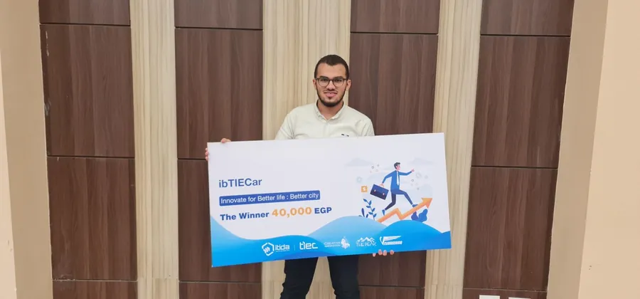

مهندس تخطيط معدات طبية
أخطط المعدات التي تُشغّل المستشفيات.
أكثر من 4 سنوات في 15 مشروعا صحيا في السعودية ومصر وأستراليا، من التصميم المفاهيمي مرورا بـ IFC وShop Drawings وحتى As-Built (LOD 500).
متاح للأعمال الحرة
15 مشروعا صحياBIM · LOD 500
4+سنوات في تخطيط المعدات
15مشروعا صحيا في 3 دول
181Mريال سعودي · ميزانية معدات لمستشفى واحد
500+لوحة رسومات عبر كل المشاريع
01 من أنا
أنا مهندس تخطيط معدات طبية، آخذ معدات المستشفى من التصميم المفاهيمي مرورا بـ IFC وShop Drawings وحتى As-Built (LOD 500).
أقدم جداول RBR وأوراق بيانات الغرف والمواصفات وجداول الكميات وتقديرات التكلفة ومتطلبات ما قبل التركيب وMEP وفق FGI وHTM وCBAHI وAusHFG، مدعومة بـ BIM وISO 19650 والأتمتة، مع تصنيف المعدات وفق CSI MasterFormat وOmniClass.
- مقر العمل
- القاهرة، مصر
- التخصص
- تخطيط معدات الرعاية الصحية وBIM
- التعليم
- بكالوريوس الهندسة الطبية الحيوية، جامعة المنصورة
- اللغات
- الإنجليزية (احترافي كامل)، الألمانية (مبتدئ)
- الحالة
- متاح للأعمال الحرة
10مشاريع في السعودية، منها Red Sea Global ونيوم
4مشاريع في مصر، من توسعات المستشفيات إلى العيادات
1مشروع في أستراليا: توسعة مستشفى كانبيرا
02 ما أقدمه
من أول تكليف حتى As-Built
جداول RBR وأوراق بيانات الغرف والمواصفات وجداول الكميات وتقديرات التكلفة ومتطلبات ما قبل التركيب / MEP، مدعومة بـ BIM وISO 19650 والأتمتة.
جداول RBR وأوراق بيانات الغرف
جداول معدات غرفة بغرفة وأوراق بيانات الغرف لكل قسم، سريري ومعملي.
Shop Drawings وAs-Built
Shop Drawings بمستوى LOD 400 ورسومات As-Built بمستوى LOD 500، مع مراجعة IFC والملاحظات.
المواصفات وجداول الكميات
مواصفات فنية وجداول كميات وتقديرات تكلفة مكتوبة وفق معيار المشروع.
بيانات ما قبل التركيب وMEP
متطلبات الكهرباء والغاز والحمل الحراري والبيانات لكل صنف، جاهزة لفريق MEP.
كشف التعارضات والتنسيق
نماذج BIM منسقة في Navisworks وتُدار وفق ISO 19650 على Autodesk Forma (ACC سابقا).
الأتمتة ولوحات المتابعة
أدوات Dynamo لفحص الغرف وإنتاج اللوحات، وقاعدة بيانات معدات في Excel، ولوحات Power BI.
03 طريقة عملي
خمس مراحل، خيط واحد
بيانات المعدات نفسها ترافق المشروع من أول مخطط حتى سجل As-Built.
01
المفهوم وSD
لوحات توزيع الغرف وأولى جداول المعدات.
02
تطوير التصميم
جداول RBR والمواصفات وتقديرات التكلفة.
03
TD وIFC
متطلبات ما قبل التركيب وMEP وجداول الكميات ونماذج جاهزة لـ IFC.
04
Shop Drawings
لوحات LOD 400 ومراجعة الملاحظات وتنسيق التعارضات.
05
As-Built
لوحات LOD 500 وسجل المعدات للتسليم.
04 مشاريع مختارة


مستشفيات وعيادات قمت بتخطيطها
مستشفيات سعودية كبرى، وتوسعات وعيادات في مصر، وأعمال تخطيط في أستراليا، من 2022 إلى 2026.
مستشفى Amala Staff Village
Red Sea Global · 2025معالجة التعارضات حتى IFCالمركز الطبي التخصصي 3
الرياض · 20241,170 غرفة · من DD إلى IFCمستشفى Almana
الرياض · 2024300 سرير · من DD إلى IFCNew Care Medical
الرياض · 2024400 سرير · مرحلتا DD وTDتخطط لمستشفى أو عيادة؟
أخبرني عن المشروع وسأرد عليك بكيف أستطيع المساعدة.
05 الخبرات
أين عملت
تخطيط من جهة المالك، وعمل استشاري، وتخطيط عن بعد لمشاريع في السعودية ومصر وأستراليا.
- يوليو 2026 – الآن
مهندس تخطيط معدات طبية
Andalusia Group · القاهرة- أخطط المعدات الطبية لمستشفيي AOH (300 سرير) وAMH من جهة المالك، في الأقسام السريرية والمعملية.
- أكتب مواصفات التجميعات الصحية (SAN-01 إلى SAN-04) مع ملفات BOQ-RBR على مستوى البنود، مبنية على مكتبة مواصفات واحدة.
- أدير قاعدة بيانات معدات في Excel تغذي أوراق بيانات المناقصات المولدة بـ Dynamo، إضافة إلى أدوات Dynamo لفحص الغرف واللوحات.
- أراجع Shop Drawings ورسومات IFC وRedline وAs-Built، وأجهز قرارات الإفراج للتصنيع.
- 2026
مخطط معدات طبية مستقل
مستقل · القاهرة- مستشفى Turtle Bay (Red Sea Global): نحو 209 لوحة Shop Drawings ومعها لوحات As-Built مقابلة بمستوى LOD 400 وLOD 500.
- سجل الأصول وبيانات COBie للمعدات الطبية.
- أكتوبر 2024 – يوليو 2026
مخطط معدات طبية
DAR International للاستشارات الهندسية · القاهرة- خططت ونمذجت المعدات لمستشفيات سعودية كبرى: Almana (300 سرير) وNew Care (400 سرير) وSMC3 (1,170 غرفة) وRed Sea Global.
- عالجت كل تعارضات المعدات في مستشفى Amala Staff Village بعد تسليم الاستشاري، ووصلت بالنماذج إلى IFC.
- بنيت عائلات بمستوى LOD 350 وأنتجت جداول RBR وأوراق بيانات الغرف وجداول الكميات والمواصفات ومتطلبات MEP وفق ISO 19650 على Autodesk Forma (ACC سابقا).
- أغسطس 2024 – أكتوبر 2024
مخطط معدات طبية
Andalusia Engineering Services · القاهرة- خططت توسعة مستشفى Andalusia المعادي (7 طوابق) وعيادات الشلالات (أكثر من 50 عيادة) وفق Egyptian HFG وFGI.
- أنتجت لوحات توزيع الغرف وجداول RBR وجداول الكميات ومتطلبات MEP في BIM.
- أغسطس 2022 – يونيو 2024
مخطط معدات طبية (عن بعد)
Corner Edge Group · أستراليا- أنجزت تخطيط مستشفى القوات المسلحة بأبو عريش (300 سرير): 26 قسما و1,165 غرفة وأكثر من 700 صنف وميزانية 181 مليون ريال.
- خططت عيادات نيوم (OXAGON وضباء وشقري) وحددت مواصفات أكثر من 300 صنف لتوسعة مستشفى كانبيرا وفق AusHFG.
- وحّدت عائلات BIM وفق CSI MasterFormat وبنيت قاعدة بيانات مركزية للمعدات.
- مارس 2023 – فبراير 2024
مهندس طبي حيوي (الخدمة العسكرية)
مستشفى العريش العسكري- دعمت صيانة أجهزة الأشعة والتنفس الصناعي والتخدير والمونيتورات، وانضممت إلى فريق تخطيط التجديد.
06 المهارات
الأدوات والمعايير والكفاءات
الكفاءات الأساسية
تخطيط المعدات الطبيةجداول RBR وأوراق بيانات الغرفShop Drawings (LOD 400)رسومات As-Built (LOD 500)مراجعة IFC والملاحظات (Redline)المواصفات الفنيةجداول الكميات وتقدير التكلفةبيانات ما قبل التركيب وMEPكشف التعارضات والتنسيقإدارة المعلومات وفق ISO 19650
الأدوات
RevitDynamoNavisworksAutoCADAutodesk Forma (ACC سابقا)ExcelAccessPower BIبرامج BIM والتصميم الأخرى
المعايير والتصنيف
FGI GuidelinesHTMCBAHIAusHFGEgyptian HFGISO 19650CSI MasterFormatOmniClass
07 التقدير والتعليم
الجوائز والخلفية العلمية

الأولماراثون Creativa ibTIECar 2021 · 40,000 جنيهجهاز TENS لتخفيف الألم؛ فوز من بين 20 فريقا متنافسا
الأولكلية الهندسة، جامعة المنصورة · 25,000 جنيهمسابقة المشاريع السنوية بمشاركة أكثر من 30 مشروعا
الثالثمعرض المشاريع الهندسية · مشروع التخرج A+نظام صحة عن بعد بالذكاء الاصطناعي يصنف 31 مرضا بدقة 92%
بكالوريوس الهندسة الطبية الحيوية
جامعة المنصورة · سبتمبر 2017 – يوليو 2022 · المعدل التراكمي 3.55 / 4.0
تدريب في الهندسة الطبية والإكلينيكية
مركز المسالك البولية والكلى · أغسطس 2021. صيانة عملية لأجهزة الغسيل الكلوي ومناظير المثانة وأجهزة تفتيت الحصوات.
اكتشاف نوبات الصرع
جهاز إنترنت الأشياء القابل للارتداء · 2021. اكتشاف بتعلم الآلة بدقة 95% وزمن تنبيه من 2 إلى 3 دقائق.
08 الأسئلة الشائعة
أسئلة يطرحها العملاء
إجابات مختصرة قبل أن نتحدث.
ما المخرجات التي تقدمها؟
جداول RBR وأوراق بيانات الغرف، ولوحات توزيع الغرف، وShop Drawings (LOD 400) ورسومات As-Built (LOD 500)، والمواصفات الفنية، وجداول الكميات وتقديرات التكلفة، ومتطلبات ما قبل التركيب وMEP.
ما المعايير التي تعمل وفقها؟
FGI Guidelines وHTM وCBAHI وAusHFG وEgyptian HFG وISO 19650، مع تصنيف المعدات وفق CSI MasterFormat وOmniClass.
هل يمكنك العمل عن بعد؟
نعم. مقري القاهرة وقد خططت مشاريع عن بعد لفرق في أستراليا والسعودية.
هل يمكنك استلام نموذج قائم؟
نعم. في مستشفى Amala Staff Village عالجت كل تعارضات المعدات بعد تسليم الاستشاري ووصلت بالنماذج إلى IFC.
ما البرامج التي تستخدمها؟
Revit وDynamo وNavisworks وAutoCAD وAutodesk Forma (ACC سابقا) وExcel وAccess وPower BI، إضافة إلى برامج BIM والتصميم الأخرى حسب احتياج المشروع.
كيف نبدأ؟
راسلني على واتساب أو البريد الإلكتروني بنوع المشروع وموقعه ومرحلة التصميم، وسأرد عليك بكيف أستطيع المساعدة.
09 المقالات
ملاحظات في تخطيط الرعاية الصحية
تخطيط المعدات الطبية وBIM وتصميم الرعاية الصحية.
10 تعاون معي
لنخطط مشروعك القادم
متاح للأعمال الحرة. راسلني على واتساب لأسرع رد.